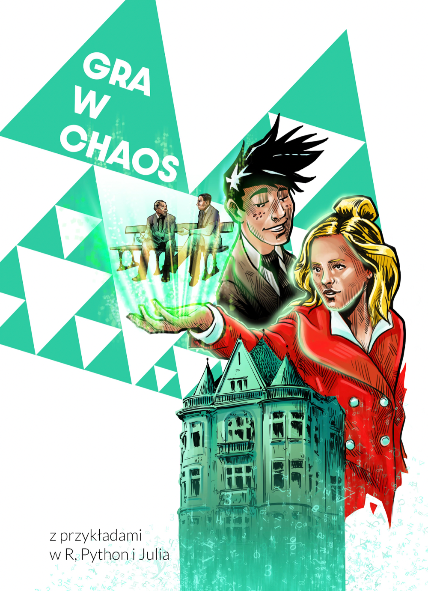

Gra w chaos
2022-07-22
z przykładami w języku matematyki, R, Python i Julia

0.1 Dlaczego musiałem napisać tę książkę?

Ponad ćwierć wieku temu, w drugiej klasie liceum, mój nauczyciel geometrii - prof. Wiesław Kostarczyk podrzucił mi książkę, która na nowo rozbudziła moje zainteresowanie matematyką. Były to ,,Fraktale od geometrii do sztuki’’ prof. Piotra Pierańskiego. Wtedy rozumiałem być może jedną piątą z tej książki, ale to wystarczyło. Krzywa, która jest tak gęsto upakowana w kwadracie, że choć ma zerowe pole to każdy niezerowy kwadracik zawiera jej kawałek? Dwa równoliczne zbiory, z których jeden na długość 0 a drugi długość 1? Paradoks za paradoksem.
Pięć lat później znów trafiłem na fraktale, tym razem podczas studiów informatycznych. Okazało się, że te ciekawe figury mają nie tylko interesujące właściwości matematyczne, ale też bardzo ciekawą konstrukcje którą można zaprogramować! Ech, ile czasu spędziłem na wyszukiwaniu i oprogramowaniu różnych wariantów fraktali (a były to czasy raczkującego Internetu, więc trudno było znaleźć ciekawe konstrukcje, trzeba było głęboko kopać).
Gdy 4 lata temu zacząłem pracować nad nowym programem ,,Matematyka Komiksowa’’, który miał na celu pokazać z użyciem komiksu ciekawe wyniki łączące matematyką i informatykę nie miałem wątpliwości! Musiałem napisać historię związaną z fraktalami. Chciałem też by była to wyjątkowa pozycja pokazująca fraktale z wielu perspektyw, ponieważ nigdy nie wiadomo która perspektywa okaże się najbardziej wciągająca. W tej książce znajdziecie urywki z życia trzech wielkich polskich matematyków związanych z fraktalami - Wacława Sierpińskiego, Stefana Banacha i Hugona Steinhausa. Z wyjątkiem pierwszego nie pracowali oni bezpośrednio nad fraktalami, ale jak się okazuje ich wyniki pomagają zrozumieć naturę tych figur. Historie te są pokazane przez krótkie komiksowe historyjki, mam nadzieję, że zainteresują one niektórych czytelników do sięgnięcia głębiej do ich życiorysów. Oczywiście nie mogło zabraknąć przedstawienia wybranych - istotnych twierdzeń - opisujących prawidła rządzące światem fraktali. Starałem się unikać terminologii wykraczającej poza słownik zainteresowanego matematyką licealisty. Mam nadzieję, że to zubożenie słownika zostanie mi wybaczone również przez kolegów matematyków. Zależało mi też na tym by przedstawić w tej książce też dokładne przepisy jak fraktale odtworzyć w zaciszu własnego komputera. Mamy więc programy rysujące fraktale w językach R, Python i Julia.
Pisanie tej książki pozwoliło mi na nowo przeżyć ekscytacje sprzed lat bawiąc się w generowanie dziwnych figur. Mam nadzieję, że choć część tych emocji udzieli się też Tobie, drogi czytelniku.
Przemysław Biecek, Wilga 2022.
0.2 Jak czytać tę książkę
Fraktale to dziwaczne struktury, niby przypadkowe, ale opisane w zaskakująco uporządkowany sposób. Podobnie jest z tą książką. Nasza podróż po krainie fraktali składa się z trzech części o pewnej strukturze.
Każda część ma swojego opiekuna / przewodnika. Styl części różni się w zależności od tego kim jest opiekun.
Pierwsza część skupiona jest głównie na konstrukcji pewnych tworów i oprowadzi nas po niej Wacław Sierpiński, który był genialnym organizatorem.
Druga część przeprowadzi nas po podstawach matematycznych fraktali. Będzie sporo definicji i twierdzeń z którymi zazwyczaj spotykają się studenci matematyki na pierwszym roku. Kto mógłby lepiej zaopiekować się tą częścią niż genialny matematyk Stefan Banach?
Trzecią częścią zaopiekuje się Hugo Steinhaus, który bardzo interesował się zastosowaniami. Jest to więc wymarzony przewodnik po ciekawych zastosowaniach systemów funkcji iterowanych.
Również każda z części ma wewnętrzną strukturę, którą powtórzymy trzykrotnie. Zaczniemy od przedstawienia naszego opiekuna, ponieważ matematyka to nie tylko wzory, ale też ludzie, którzy je tworzą. Następnie zilustrujemy jedną scenkę z życia opiekuna, która łączy do z tematem fraktali. Niektóre z tych scenek mają na tyle historyczne znaczenie, że doczekały się pomników. Kolejny krok to przedstawienie metody konstrukcji określonego rodzaju fraktali, będą to głównie algorytmy pokazując jak zrobić dany fraktal. Powinno to pobudzić apetyt matematyczny, który zaspokoić może wyłącznie formalne matematyczne przedstawienie, dlaczego dany fraktal działa. Matematycy mówią na takie części ,,część z gwiazdką’’. Powinna być interesującym uzupełnieniem informacji dla osób lubiących kopać głęboko, ale można też je pominąć przy pierwszym czytaniu. Ostatnia fragment każdej części to przykłady programów w językach R, Python i Julia. Można te przykłady wykorzystać, aby samemu na własnym komputerze odtworzyć przedstawiane fraktale.
Na końcu książki zostawiamy kilka zadań do samodzielnego wykonania dla szczególnie zainteresowanych czytelników.